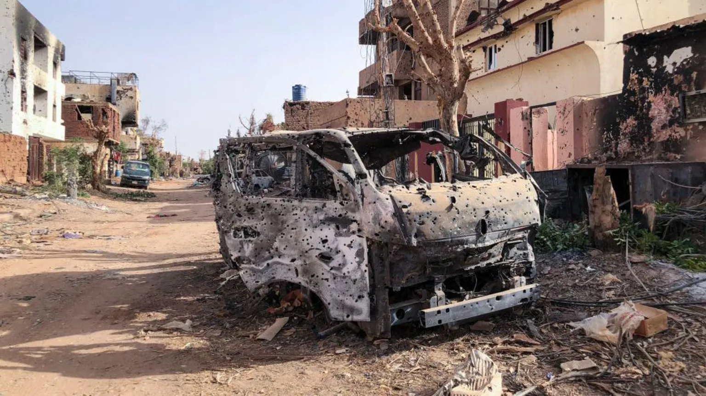

Sudan: Why has fighting broken out there?
The fighting that has erupted in the Sudanese capital,
Khartoum, and elsewhere in the country is a direct result
of a vicious power struggle within the country's military
leadership.
The clashes are between the regular army and a
paramilitary force called the Rapid Support Forces (RSF).

Who is fighting who in Sudan?
Since the 2021 coup, Sudan has been run by a council of
generals, led by the two military men at the centre of this
dispute:
• Gen Abdel Fattah al-Burhan, the head of the armed
forces and in effect the country's president
• And his deputy and leader of the RSF, Gen Mohamed
Hamdan Dagalo, better known as Hemedti.
They have disagreed on the direction the country is going
in and the proposed move towards civilian rule.
The main sticking points are plans to include the 100,000-
strong RSF into the army, and who would then lead the
new force.
Why did the fighting in Sudan
start?
The shooting began on 15 April following days of tension
as members of the RSF were redeployed around the
country in a move that the army saw as a threat.
There had been some hope that talks could resolve the
situation but these never happened.
It is disputed who fired the first shot but the fighting swiftly
escalated in different parts of the country with more than
400 civilians dying, according to the World Health
Organization.
What do the two sides want?
Gen Dagalo has said, in a series of tweets, that Gen
Burhan's government were "radical Islamists" and that he
and the RSF were "fighting for the people of Sudan to
ensure the democratic progress for which they have so
long yearned".
Many find this message hard to believe, given the brutal
track record of the RSF.
Gen Burhan has said he supports the idea of returning to
civilian rule, but that he will only hand over power to an
elected government. Some suspect him of having links to
ex-President Bashir and his allies, which the army has
denied.
There are suspicions that both generals want to hang on
to their positions of power, unwilling to losing the wealth
and influence that go with them.
What are other countries doing?
There are fears that the fighting could further fragment the
country, worsen political turbulence and draw in
neighbouring states.
Diplomats, who have played a crucial role in trying to urge
a return to civilian rule, have been trying to find a way to
get the two generals to talk.
Soon after the fighting began a regional bloc agreed to
send three presidents - from Kenya, South Sudan and
Djibouti - to Khartoum, but the mission never happened.
The UK, US and EU have all called for a ceasefire and
talks to resolve the crisis and many countries are now
focused on trying to get their citizens out.